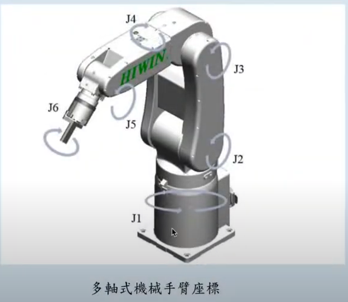
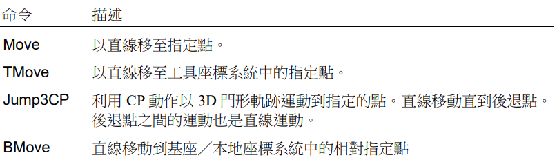

機器人運動控制的核心：翻譯的藝術
六軸機器手臂兩者都會用到，它們是相輔相成的兩個核心概念，缺一不可。我們可以將其想像成翻譯的兩個方向：
從「關節語言」翻譯成「世界語言」。已知角度，求末端位置。
從「世界語言」翻譯成「關節語言」。已知目標位置，求關節角度。
六軸機器手臂的關節軸向與座標系定義
理解運動學的前提：基座座標系 (Base)、世界座標系 (World)、工具座標系 (Tool) 與 6 個旋轉自由度
六軸垂直關節機器人結構與自由度
J1 (基座旋轉)、J2 (大臂俯仰)、J3 (小臂俯仰)、J4 (手腕旋轉)、J5 (手腕彎曲)、J6 (手腕法蘭旋轉)。6 個旋轉關節串聯組成完整 6 自由度 (3 位置 + 3 姿態)。

直角座標系與歐拉角姿態 (Roll / Pitch / Yaw)
笛卡爾空間除了 $(X, Y, Z)$ 位置，末端還具備 3 個旋轉姿態角：U（繞 Z 軸轉動/偏航 Yaw）、V（繞 Y 軸轉動/俯仰 Pitch）、W（繞 X 軸轉動/翻滾 Roll）。

正向與反向運動學總結對照表
| 特性 | 正向運動學 (Forward Kinematics) | 反向運動學 (Inverse Kinematics) |
|---|---|---|
| 解決問題 | 已知關節角度，求末端位置 | 已知末端位置，求關節角度 |
| 輸入 (因) | 關節角度 ($q_1, \dots, q_6$) | 笛卡爾座標與姿態 ($X, Y, Z, R, P, Y$) |
| 輸出 (果) | 笛卡爾座標與姿態 ($X, Y, Z, R, P, Y$) | 關節角度 ($q_1, \dots, q_6$) |
| 計算難度 | 簡單，直接（有固定公式） | 複雜，非線性、迭代求解 |
| 解的數量 | 唯一解 | 可能無解、多組解或無限多解（奇異點） |
| 核心用途 | 狀態顯示、模擬、關節運動控制 | 路徑規劃、直線/圓弧運動、所有基於任務的應用 |
互動體驗區：運動學運作模擬
體驗「只有正向運動學」的關節點動模式 vs 「透過反向運動學」指定目標點。
關節角度設定 (Joint Space)
實際應用情境：何時用 FK？何時用 IK？
使用反向運動學 (IK)
當「目標」在現實世界中定義時
-
產線上的焊接或塗膠： 沿著工件邊緣 50 公分的直線移動，控制器切分微小點並即時進行 IK 計算。
-
視覺系統無序抓取： 3D 相機回傳物件座標 $(X, Y, Z)$，利用 IK 轉化為關節角度讓夾爪抓取。
使用正向運動學 (FK)
當系統需要「知道」手臂在哪裡時
-
教導器即時座標顯示： 高頻率讀取馬達編碼器，利用 FK 將角度換算成世界座標顯示在螢幕上。
-
模擬軟體碰撞檢測： 透過 FK 計算每個連桿的空間位置，判斷機器人是否會互相碰撞。
逆運動學的多組解 (Multiple Solutions) 與姿態旗標 (Posture Flags)
當目標座標相同時，手臂可用不同的關節姿態抵達——EPSON 控制器如何精確指定唯一姿態？
SCARA 手臂：右手系 (/R) 與左手系 (/L)
2 組解
平面 4 軸 SCARA 手臂抵達同一個 $(X, Y)$ 座標時，手肘可向右凸出（右手姿勢 /R，J2 ≤ 0°）或向左凸出（左手姿勢 /L，J2 ≥ 0°）。點位標籤如 P1 /R 或 P1 /L。

六軸垂直關節手臂：高達 8 組解的姿態旗標
8 組解
六軸機械手臂抵達同一目標位姿具有 8 種構型組合：手肘朝上/下（/A, /B）、手腕翻轉/非翻轉（/F, /NF）、肩部左/右。透過旗標鎖定能避免手臂運動中劇烈甩動撞機！

運動插補的運動學本質：PTP (Go) 弧線 vs CP (Move) 直線
點對點關節插補與連續路徑直角插補的計算開銷與路徑差異
PTP (Point-To-Point) 關節插補 — Go / JTran
計算最少・速度最快控制器僅在「起點」與「終點」各執行一次逆運動學求解，隨後各關節在關節空間中以平滑 S 曲線獨立加減速旋轉。末端軌跡為空間複合弧線，絕不發生奇異點卡死，最適合快速搬運空載換位！

CP (Continuous Path) 直線插補 — Move / Arc
幾何直線・即時高頻 IK控制器在世界空間將直線路徑等距切分為數千個微小插補點，每隔 1~2 毫秒執行一次高頻逆運動學 IK 計算。末端絕對保證為精準直線，但若路徑穿越奇異點，關節速度將衝破物理極限而劇烈報警。
